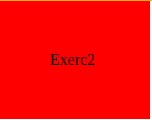
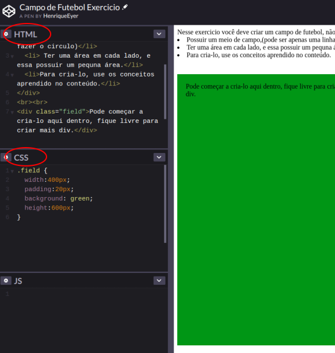

O que vamos aprender?
Hoje você aprenderá a usar o Box Model do CSS, as propriedades fisicas dos elementos HTML e suas regras. De forma mais simples, você aprenderá a modificar o design ou layout dos seus elementos HTML: mudança de tamanho, inserção de margens e/ou bordas.
Você será capaz de:
- Trabalhar o layout dos elementos HTML e entender seu funcionamento.
- Entender o funcionamento do Box Model do CSS.
- Conhecer suas propriedades e saber o que elas modificam.
O que é o Box Model do CSS?
É o conjunto de propriedades que definem o layout e o design de um elemento HTML (por exemplo uma div). A tradução para o português seria Modelo de Caixa, que constrói uma associação de um elemento HTML a uma caixa.
As 5 principais propriedades dele:
O Box Model consiste nessas 5 propriedades que permitem dimensionamento do elemento:
- Width (largura)
- Height (altura)
- Padding (prenchimento)
- Border (borda)
- Margin (margem)
A imagem abaixo representa um elemento com as propriedades acima aplicadas nele e o valor correspondente a cada uma delas.
- Regiao Laranja é a área da margin com o valor 25px
- Regiao Amarela é a área da border com o valor 0
- Regiao Verde é a área do padding com o valor 10px
- Regiao Azul é a área do conteúdo que seu tamanho é definido pelo width com o valor 500px e height com 400px
Dica: clique com o botão direito no quadrado azul e selecione a opção inspecionar, então será aberta uma aba em seu Browser, em seguida clique em Elements no canto superior dessa aba e depois em Styles. O quadrado mostrado é o Box Model do quadrado azul abaixo.
Entendeu? Se sim, clique aqui para ir para "Adicionando valores às propriedades"
Para facilitar vamos imaginar que cada elemento HTML é uma pintura em um quadro e que ele está exposto em uma
galeria de arte.
Começaremos pegando um quadro separadamente.
Observe que ele possui várias partes que podem ser separadas. Trabalharemos inicialmente com 3 delas. A Pintura , que está no centro, a Tela, que abriga a pintura e a Moldura, que envolve a Tela.
Cada parte dessas pode ser comparada a uma propriedade do Box Model.
-
A Pintura seria o conteúdo do elemento: textos, imagens ou ainda outros. Uma pintura
possui dimensões; essa, por exemplo, possui
50 cm de altura e 40 cm de largura.
De modo semelhante se comporta o elemento, porém, suas dimensões podem ser definidas por você,
por meio das propriedades Width e Height.
Ex: width: 400px, height: 300px
- A Tela é a parte entre a moldura e a pintura, no exemplo acima ela tem a cor branca e sua função é destacar a pintura e mantê-la em um melhor posicionamento. Em nossa comparação, ela seria o Padding: espaçamento entre o conteúdo interno e a borda do elemento HTML. Ela não está obrigatoriamente centralizada, se for necessário que esteja mais à esquerda basta diminuir o Padding de um só lado, como será visto mais adiante.
- A Moldura seria a Border do elemento. Ela pode ser de tipos, tamanhos e cores variados, o mesmo ocorre com a Border do elemento HTML, que pode assumir tamanhos, cores e estilos distintos, de acordo com a preferência e a necessidade de quem a constrói.
Para o propriedade da Margin precisamos analisar a imagem a abaixo.
Adicionando valores às propriedades
Como definir valores para elas?
-
É simples atribuir valores ao height e ao width, uma vez que cada um deles possui apenas um valor.
Exemplo:.div-color: {
width: 200px;
height: 100px;
}
Obs: a medida utilizada para os números não precisa ser necessariamente px (pixel). Há outras que podem ser utilizadas, como: porcentagem do elemento pal (%), a porcentagem da tela do browser do usuário, vw (viewPort width) e vh (viewPort height). -
As outras propriedades podem ser declaradas igual ao width e ao height, mas todos os lados possuirão o
mesmo valor (como na div da dica).
Você pode declarar um valor apenas para um lado, por exemplo:
Você pode declara apenas para um lado um valor, por exemplo:VerdeNessa div, todos os padding estão com um único valor:
.div-verde: {
background: green;
border: 2px solid black;
font-size: 30px;
margin: 5px;
padding: 20px;
width: 80px;
}
O padding também pode ser declarado assim:
padding: 20 20 20 20px
O resultado permanece igual. Porém podemos também fazer modificações:
Verde
.div-verde: {
background: green;
border: 2px solid black;
font-size: 30px;
margin: 5px;
padding:0 20 20 20px;
width: 80px;
}
Modificando dessa forma podemos ver que o padding superior ficou zerado (pode ser percebido na inspeção do elemento) e com isso o conteudo(Verde) está quase colado no topo do elemento.
Quando colocamos esses quatro valores (0 20 20 20), o 0 seria o topo e continuaria em ordem horaria.
top->right->bottom->left (topo->direita->baixo->esquerda) - Cada lado possui um nome específico, caso queira mudar somente a margin superior, é necessário colocar margin-top.
- Abaixo estão os nomes específicos de cada área:
-
A Border possui outros valores a serem adicionados: estilo e cor.
Pode-se ver como a Border do exemplo anterior foi declarada:
Exemplo:
border: 3px dotted green;

Cuidado!
Lembre que o tamanho total do seu elemento sempre será:
Largura Total = width + padding-left + padding-right +border-left + border-right.
Para a Altura isso se repete, basta trocar right e left por top e bottom e width por height.
Para resolver esse problema poderá ser usada a propriedade box-sizing: border-box.
Exercícios para fixação
Estes exercícios te ajudarão a guardar o conteúdo e como usar cada uma das propriedades.
Crie um arquivo index.html e um style.css no seu computador. Os exercícios devem ser resolvidos lá.
Para cada exercício uma div deverá ser criada.
- Exercício-1: Crie um quadrado de lado de 300px.
-
Exercício-2: Reproduza a div abaixo ,use padding e width para isso. Exerc2 Precisa estar centralizado.

- Exercício-3: Crie 3 div com o mesmo css do último exercício, as duas primeiras você deverá criar uma borda diferente para cada uma das duas primeiras, nenhum dos valores da borda podem se repetir. Na terceira div você precisa adicionar na borda superior uma borda diferente das restantes.
-
Exercício-4: Escreva seu nome completo sem o uso de espaço, e coloque uma tag span em cada palavra do seu
nome.
Exemplo: *span*Manuel*/span**span*Ferreira*span*. Agora você precisa separá-las sem o uso de espaço apenas usando as propriedades que aprendemos hoje. -
O exercício está no link. Foi criado no codePen.
O CodePen possui campos para adicionar o HTML e o CSS, para resolve-ló basta adicionar o codigo nas janelas de HTML e CSS.
Como na imagem abaixo.Exercício Campo de Futebol
Gabarito Campo de Futebol
Exercício Bônus
Você montará a sua galeria de arte com qualquer tema: pinturas famosas, pinturas abstratas, galeria de fotos,
retratos seus, seus personagens favoritos, etc.
Crie um arquivo index.js e um style.css e comece o projeto!.
- Todo quadro precisa ter um conteúdo dentro (foto, frase, pintura, uma letra).
- Necessita ter uma borda, como se fosse uma moldura.
- Você deve fazer pelo menos 4 quadros e a posição deles fica a seu critério.
- Você deve usar todas as propriedades aprendidas no conteúdo.
Recursos adicionais (opcional)
Algumas coisas adicionais sobre o conteúdo, caso seja interessante para você.